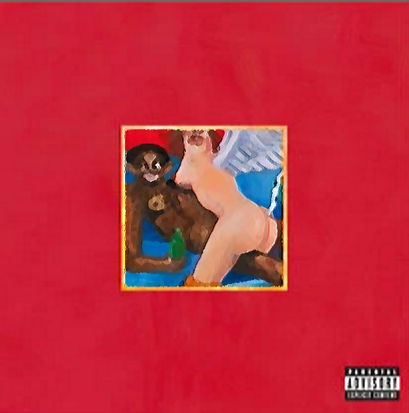
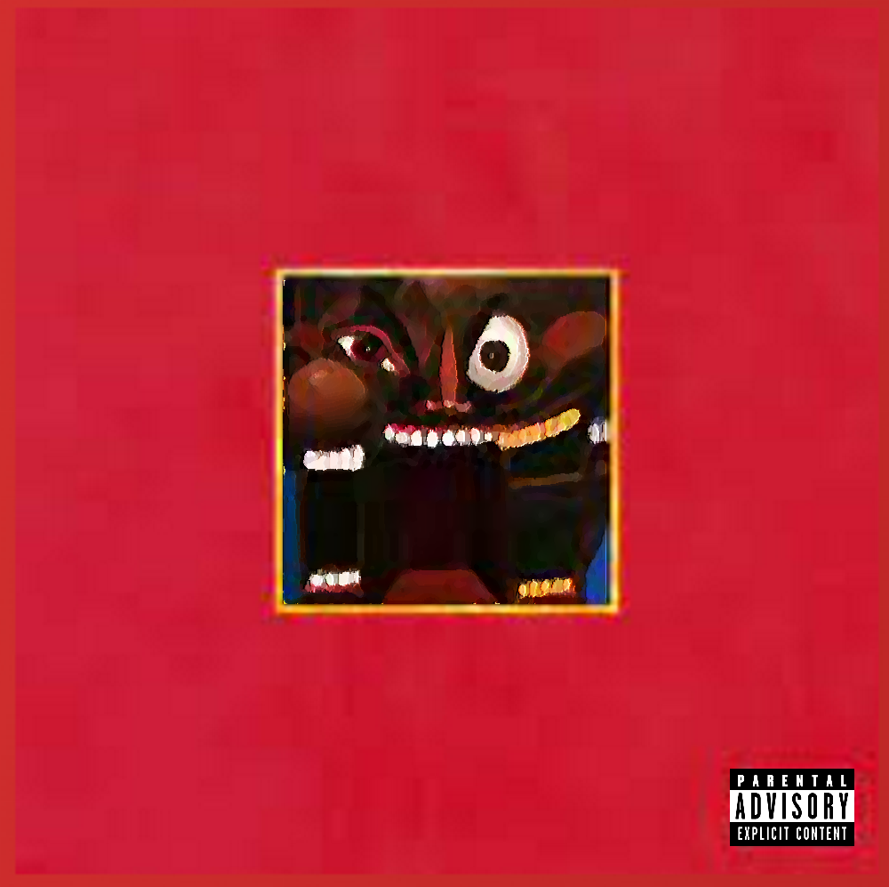
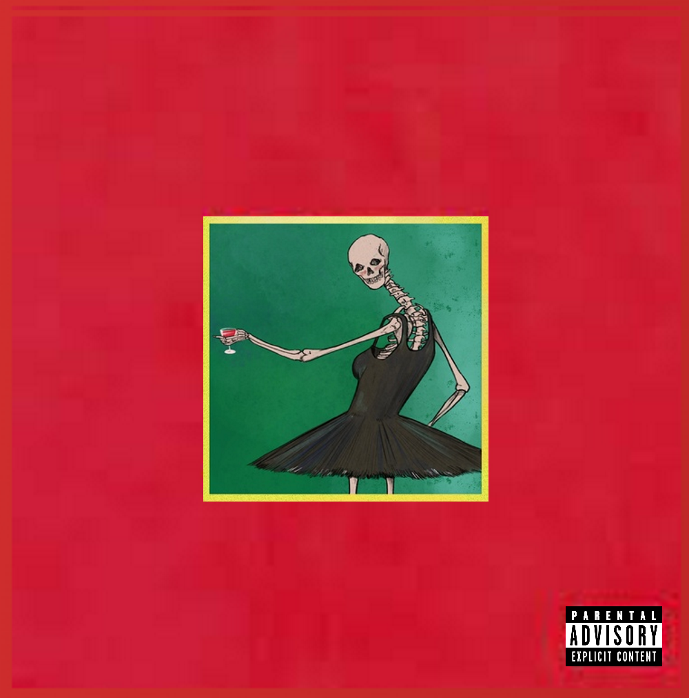

"Runaway" is a 2010 short film directed by Kanye West. The film is based on his album "My Beautiful Dark Twisted Fantasy" and features several of its songs. The film premiered on October 23, 2010
The film opens with a narration from rapper Nicki Minaj, as Kanye drives his car through a dark forest. The song plays in the background and sets the tone for the dreamlike, fantastical narrative.
Kanye finds a fallen phoenix (portrayed by Selita Ebanks) in the forest. The song plays as he helps her and takes her to his home, symbolizing the idea of beauty emerging from darkness.
This instrumental version of the song is used during a dinner party scene where the phoenix experiences a culture shock among the guests, who are intrigued by her otherworldly presence.

The film transitions to a scene featuring a ballet performance. This interlude serves as a background score, evoking a sense of elegance and grace.

The phoenix watches as Kanye plays the song on a piano. The scene represents the couple's growing bond and foreshadows their eventual separation.
The centerpiece of the film, this song plays as Kanye performs at a piano accompanied by ballerinas. The scene reflects on personal and public mistakes, with the chorus urging people to "run away" from their flaws.

In a montage, Kanye and the phoenix experience moments of happiness together. The song's dark, distorted sound alludes to the complex nature of their relationship.

As the phoenix becomes increasingly disillusioned with the human world, the song's themes of heartache and blame parallel the deterioration of their relationship.

Kanye realizes the phoenix must return to her world. The song captures the emotion of their parting, with a sense of longing and loss.
Name: Kanye West Email: kanye@west.com Phone: 555-1234